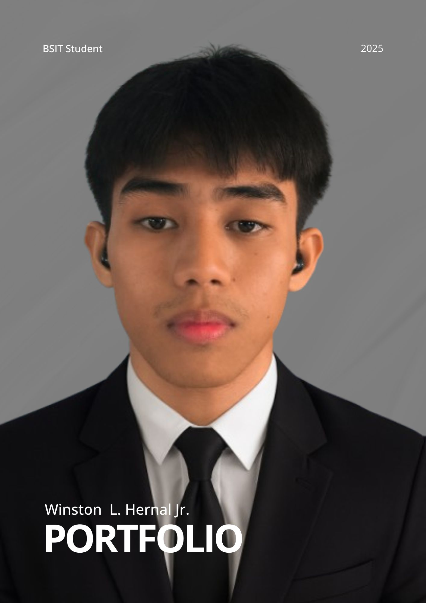
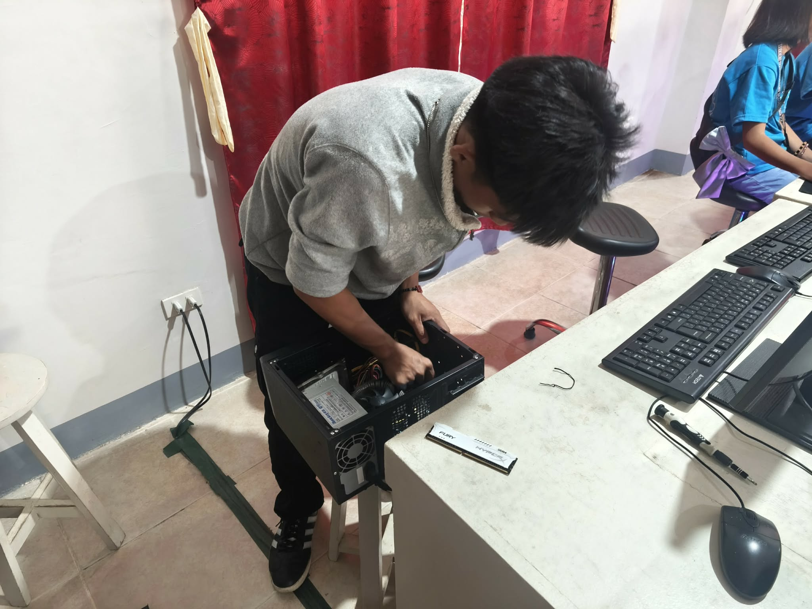

Hey, I'm Winston,
A BSIT & Student Computer TECHNICIAN
Transforming technical problems into solutions - Computer troubleshooting and repair that delivers results.
Contact Me Resume
Technical Excellence
Specializing in computer repair, hardware diagnostics, and system optimization. Every problem has a solution, and I'm here to find it.
Hardware Repair
Expert diagnosis and repair of computer hardware components and system failures.
Software Solutions
Troubleshooting software issues, system optimization, and performance enhancement.
System Diagnostics
Comprehensive testing and analysis to identify and resolve technical problems.
Technical Support
Reliable support and maintenance solutions for all your computing needs.

Working Until I'm Flying
As a dedicated BSIT-3 student at Lyceum of Aparri and active CSO committee member, I combine academic excellence with practical technical skills.
With expertise in computer troubleshooting, hardware repair, and system diagnostics, I approach every technical challenge methodically to deliver effective solutions. My goal is to ensure every computer I work on performs at its best.
Technical Skills
Hardware Expertise
Component replacement, motherboard repair, power supply diagnostics
Software Management
OS installation, driver updates, system optimization
Problem Diagnosis
Quick identification and resolution of technical issues
Maintenance
Regular checkups, cleaning, and preventive care
Data Recovery
File retrieval and backup solutions
Security
Virus removal, malware protection, system security
My Journey
CSO Committee Member
Active member of the Computer Science Organization, organizing tech events and workshops for students.
BSIT Student
Currently pursuing Bachelor of Science in Information Technology at Lyceum of Aparri, maintaining strong academic performance.
Computer Technician
Providing professional computer repair and technical support services to clients, achieving high satisfaction rates.
Work Immersion
Completed work immersion program gaining hands-on experience in real-world IT environments.